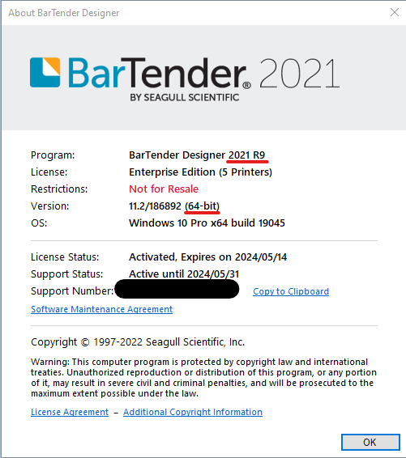

Bartender
The Bartender LabelPrint service is a Window Service that enables other Granite applications to print Bartender labels.
Each type of label that can be printed has a corresponding SQL view that returns the information/data that displays on the label. The application will query this view with a key (Barcode, Item Code, etc) to fetch the relevant information. After that, the application will map the data returned by the SQL view to the matching Named Data Source in the Bartender label format.
Supported Bartender Versions:
-
32 bit versions
- 10.1 R1, R4
- 2016, R1, R4
-
64 bit versions
- 2016 R9
- 2019 R6, R10
- 2020
- 2021, R7
Setup
Prerequisites
- Bartender
- .NET Framework 4.5
Installation
-
Check the version of Bartender that is currently installed. You can check by opening Bartender Designer, and selecting Help -> About. Take note of the release number ant the bitness as shown here:

-
Copy the version of GraniteLabelPrinting that matches the bitness of Bartender that you have installed.
-
In the
Granite.LabelPrinting.exe.configfile, configure your connection string to the Granite database<connectionStrings> <add name="CONNECTION" connectionString="Data Source=.\;Initial Catalog=Granite;Persist Security Info=True;User ID=******;Password=****" providerName="System.Data.SqlClient" /> </connectionStrings> -
In the
Granite.LabelPrinting.exe.configfile, configure yourEndPointsetting. This is the address that the LabelPrintService will run on.<add key="EndPoint" value="http://localhost:2077/"/> -
In the
Granite.LabelPrinting.exe.configfile, ensure that theProvidersetting is set toBartender<add key="Provider" value="Bartender"/> -
Run
Granite.LabelPrinting.exeand follow the instructions to complete the install.
Note
It is advisable to run the service from the console and test print before installing as a service.
You may need to run the the Granite Label Printing service as administrator, depending on the permissions yor user account has.
App Settings
EndPoint
The endpoint address of the printing service. Hosted via windows service.
<add key="EndPoint" value="http://localhost:2077/"/>
Provider
Provider options ZPL OR Bartender.
Take Note while this service is still capable of printing ZPL labels, it is highly advised to use the new IIS ZPL Label Print Service instead.
ZPL printing via this service will not receive any further support, and will eventually be removed.
If you do choose to use this service to print ZPL labels, nsure that the default labels below is relevant to your provider. The extension and file needs to be setup correctly .zpl or .btw
<add key="Provider" value="Bartender"/> <!--Bartender or ZPL-->
PrinterName
Default printer for the instance of the service, you can override the windows default printer by specifying a printer name.
<add key="PrinterName" value=""/>
PrinterNameErrorLabel
Printer name for error label printing. If configured a label with information about the application error will print. This will typical be the error you see on the screen but just printed out. Used to keep track of errors.
<add key="PrinterNameErrorLabel" value=""/>
DefaultLabelPath
Path to the default labels location
<add key="DefaultLabelPath" value="C:\Program Files\Common Files\Cradle Technology Services\Granite\Labels\"/>
Settings Label configuration
The tables below documents all the appsettings related to changing the label format and data. Each Default label is linked to a setting that below that configures the SQL view.
Settings for label path (.btw or .zpl)
| Key | Value | Setting name for SQL View |
|---|---|---|
| DefaultTrackingEntityLabel | TrackingEntity.btw | ViewTrackingEntityLabel |
| DefaultMasterItemLabel | MasterItem.btw | ViewMasterItemLabel |
| DefaultLocationLabel | Location.btw | ViewLocationLabel |
| DefaultUserLabel | User.btw | ViewUserLabel |
| DefaultPalletLabel | Pallet.btw | PalletLabel |
| DefaultBoxLabel | Box.btw | ViewBoxLabel |
Settings for label data (SQL view)
| Key | Value (SQl View Name) |
|---|---|
| ViewTrackingEntityLabel | Label_TrackingEntity |
| ViewMasterItemLabel | Label_MasterItem |
| ViewLocationLabel | Label_Location |
| ViewUserLabel | Label_Users |
| PalletLabel | Label_Pallet |
| ViewBoxLabel | Label_Box |
Logging
Logging can be configured in the nlog.config file
<?xml version="1.0" encoding="utf-8" ?>
<nlog xmlns="http://www.nlog-project.org/schemas/NLog.xsd"
xmlns:xsi="http://www.w3.org/2001/XMLSchema-instance"
autoReload="true"
internalLogLevel="Info"
internalLogFile="c:\temp\internal-nlog-AspNet.txt">
<!-- enable asp.net core layout renderers -->
<extensions>
<add assembly="NLog.Web"/>
</extensions>
<targets>
<target xsi:type="File"
name="applicationLogs"
fileName="Granite.LabelPrinting.log"
layout="${longdate}|${event-properties:item=EventId:whenEmpty=0}|${level:uppercase=true}|${mdlc:userName}|${logger}|${message} ${exception:format=tostring}"
archiveFileName="Granite.LabelPrinting.{#}.log"
archiveNumbering="DateAndSequence"
archiveEvery="Day"
archiveAboveSize="10485760"
archiveDateFormat="yyyy-MM-dd"
maxArchiveFiles="7" />
<!-- File Target for own log messages with extra web details using some ASP.NET core renderers -->
<target xsi:type="File"
name="innerWorkingsLogs"
fileName="Granite.LabelPrinting-${shortdate}.Inner.log"
layout="${longdate}|${event-properties:item=EventId:whenEmpty=0}|${level:uppercase=true}|${logger}|${mdlc:userName}|${message} ${exception:format=tostring}|url: ${aspnet-request-url}|action: ${aspnet-mvc-action}|${callsite}" />
<target xsi:type="Console"
name="lifetimeConsole"
layout="${MicrosoftConsoleLayout}" />
</targets>
<rules>
<!-- minlevel="Error"-->
<!-- minlevel="Info"-->
<logger name="*" minlevel="Error" writeTo="applicationLogs" />
</rules>
</nlog>
The minlevel setting near the end of the file is what determines how much information is logged. You can set it to Info or Error